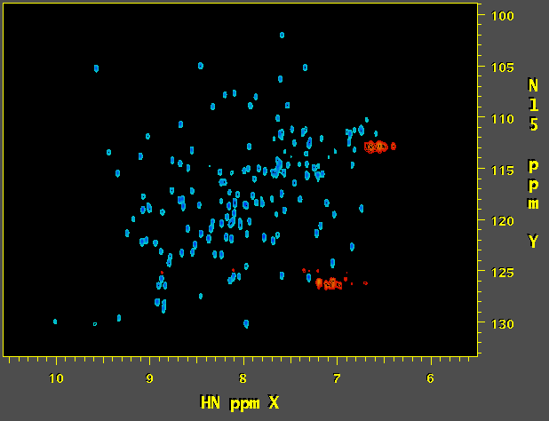
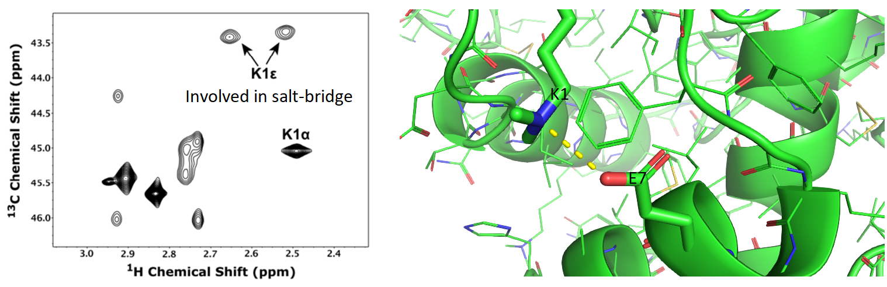

Lysozyme - antimicrobial enzyme part of the innate immune system
Lyzozymes are a family of enzymes that cleave (via hydrolysis)
peptidoglycans (polymers of sugar and amino acids). Because
peptidoglycan is a large component of bacterial cell walls, lysozyme
proteins can thereby act as an antimicrobial by destabilizing bacterial
cell integrity.


Above are three representations of egg white lysozyme (PDB: 193L and
PDB: 1SFG). Notice the large cleft on the right side of the protein.
This is where peptidoglycan (represented in green) inserts and is
positioned for catalytic hydrolysis (third image on right).

Lysozyme is found in many animal secretions, including: tears, saliva,
milk, mucus, and egg whites. It has been routinely used as a model
protein for many studies in biochemistry and structural biology in
large part due to the ease of isolation, thermal and pH stability, and
quantities available from egg whites. Its structure was the first of
any enzyme to be solved by x-ray crystallography techniques.
Below is a natural abundance 15N-HSQC of egg white lysozyme that I recorded on a 600 MHz NMR.

Shown (below) is a two-dimensional carbon HSQC spectrum of reductively
methylated egg-white lysozyme (left).
The reductive methylation approach has
been used by crystallographers to occasionally improve the
crystallization properties of otherwise difficult to crystallize
proteins. The applications of this methylation technique also extend to
spectroscopic fingerprinting of conformational states. Each methyl
group gives rise to peaks in the spectrum that correspond to the
microenvironment of N-terminal amino groups and lysine amino groups in
proteins. Given that salt-bridges are often found in proteins to
stabilize key interactions, addition of a methyl probe allows us to
monitor salt-bridge stability, state (on-off), pH-dependence, and
global conformational changes in labeled proteins.
The figure below shows that the side chain amino group of K1 is
involved in a salt-bridge interaction with the E7 glutamic acid
residue. Addition of methyl groups by reducive amination allows us to
probe this interaction (as shown in the NMR spectrum on the left).

Figure: (Left) 13C-HSQC
spectrum of reductively methylated hen egg white lysozyme. Spectrum
demonstrates that the K1 sidechain dimethylamino group exhibits two
resonances for each of the two methyl groups. Under normal
circumstances, chemical exchange between the two methyl groups results
in a single resonance for each dimethylamine. However, because the K1
sidechain is involved in a salt-bridge with E7, the two methyl groups
of the K1 sidechain are "locked" in chemically and magnetically
distinct environments and thereby give rise to two distinct peaks in
the NMR spectrum. (Right) Salt-bridge between the dimethylamino group
of the K1 sidechain and the carboxylate of E7 (from PDB: 132L).
Therefore, reductive methylation of proteins coupled with NMR can give
insight into atomic level structural events occuring within proteins
and their complexes. More detail can be found in a subsequent post
about this method.
Cryo Electron Microscopy (Cryo-EM) is a technique that has been in the
news quite recently for its potential to impact the field of structural
biology. Cryo-EM has been used for some time for structural
determination of large proteins but for a long time, the technique
failed to achieve structural resolutions comparable to X-ray
crystallography / diffraction techniques. Large advances have been made
in Cryo-EM and it is now routinely being used to solve structures of
large proteins and their complexes. One limitation, however, has been
that Cryo-EM required that protein structures being investigated are
large. This limitation seems to have been broken, especially in the
case of Micro Electron Diffraction (MicroED), which can be used to
resolve small protein structures (such as lysozyme) with resolution
comparable to x-ray diffraction.
Below is a microED structure of lysozyme solved to 2.9 angstroms
(cyan, PDB: 3J4G) aligned to an x-ray crystallographic structure of the
same protein (grey, PDB:193L). The backbone structures are nearly
identical.